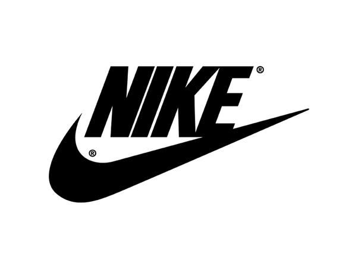
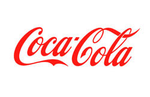

"White" Space
Clean Design

The use of "white" or negative space in the Nike, Inc. homepage is perfect, paired with the giant shoe image and huge font announcing their newest design. The fact that text overlays the actual image gives even more space around the focal point. They also use a neutral background color to put further emphasis on the main image and headline text.

There are many great principles used in the Coca-Cola Company's homepage, but the one that stands out the most to me is Fitt's Law. They make the call-to-action button brightly colored in red, and it takes up most of the screen width to immediately get the attention of anyone who is looking to scan their code.
PARC: Contrast
and Alignment
SPINX Digital uses both alignment and contrast well in their homepage. The alignment is both left and right justified, but in each of two different sections of the page. Contrast is provided not only by this offset of alignments, but by colors, the vibrant chartreuse and white text on a black background and also from the font sizes.